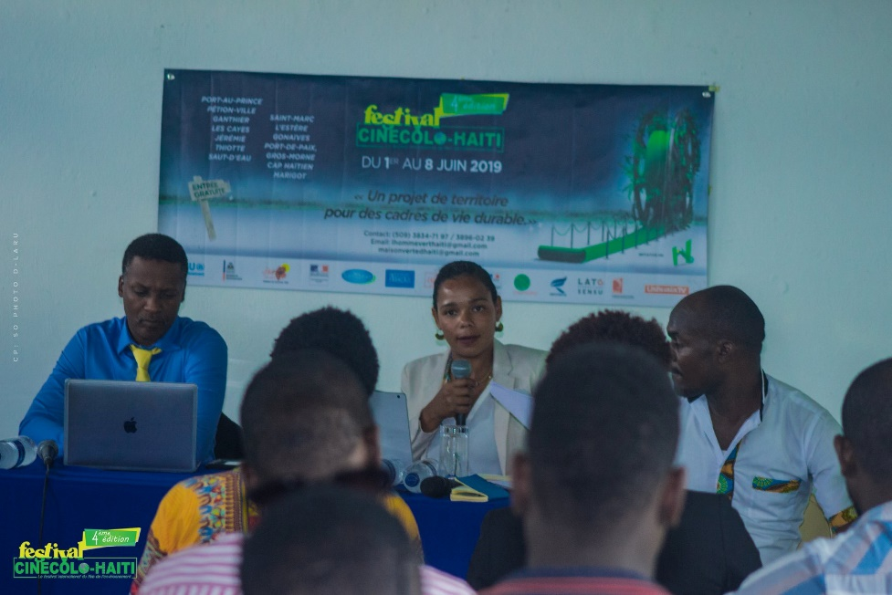

Depuis sa création, le festival CINECOLO a eu le grand privilège d’accueillir des personnalités/invité.es au plus haut point dans la sphère écologique d’ici et d’ailleurs en vue d’offrir une occasion singulière à son aimable public. Parmi lesquelles, nous pouvons citer :
Le cinéaste Arnold ANTONIN (Écologiste, Dr. en économie, Président d’honneur 2017, Haïti), l’agronome Jean André VICTOR ( Dr. En droit de l’environnement, ex-ministre de la planification, Président d’honneur 2018, Haïti), Dr. Jean Vilmond HILAIRE (Écologiste, Dr. en botanique, ex-ministre de l’environnement, Président d’honneur 2019, Haïti), Dr. Maismy- Mary FLEURANT (Dr. en droit, spécialiste en droits humains et droit de l’environnement, Président d’honneur 2022, Haïti). D’autres personnalités du domaine de l’environnement et du cinéma étaient aussi à l’honneur durant nos six éditions précédentes telles que : Gérard BERRY (Spécialiste en biodiversité, Guadeloupe), Nicole ERDAN (Ambassadrice des ODD-Caraïbes, Guadeloupe) Laure Martin HERNANDEZ (Réalisatrice Martinique), Martine SORNAY (Présidente du Terra Festival en Guadeloupe), Jane WYNNE (Manager de Wynn Farm, Haïti), René DUROCHER (Ecologiste, photographe nature, Haïti), Seth PIERRE (Agronome, spécialiste de l’eau, Haïti), Alexandra Vanessa Destin PIERRE (Doctorante, Militante du climat, Haïti), Christiane THIRION (Vice-présidente du Terra Festival, spécialiste de l’audiovisuel, Paris) ; Joëlle TAÏLAME, Urbaniste et directrice de l’ADDUAM (Agence de Développement Durable, d'Urbanisme et d'Aménagement de è Martinique), Hindou Oumarou HIBRAHIM (Militante du climat, Tchad, Afrique).
